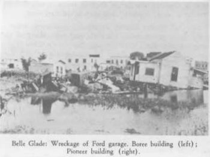
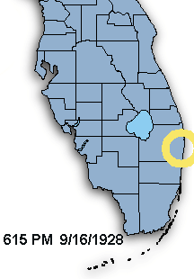
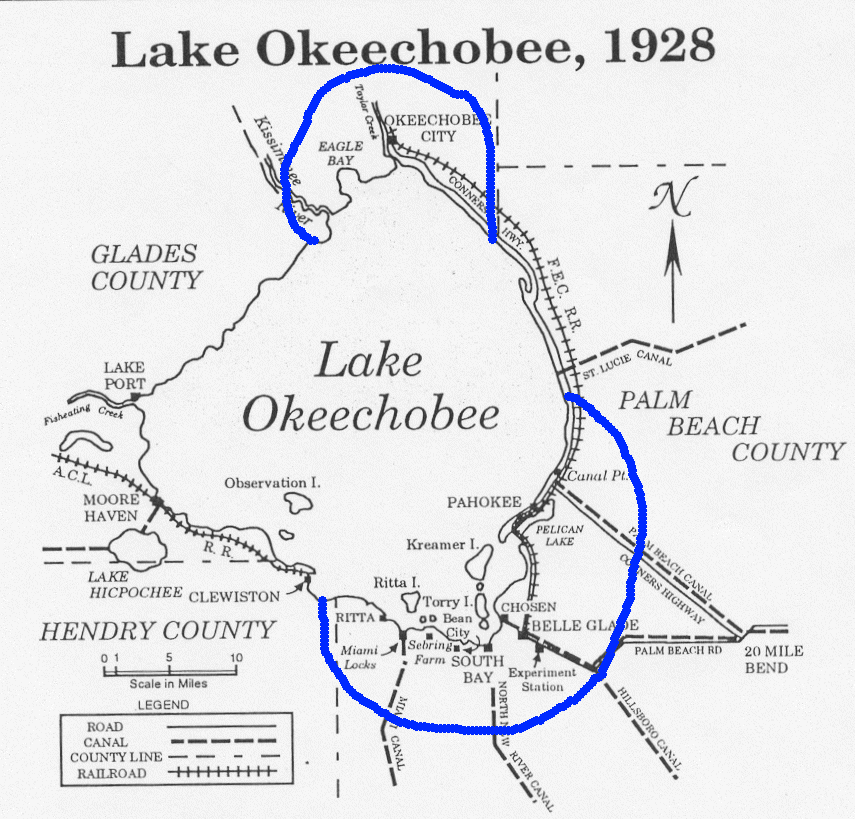
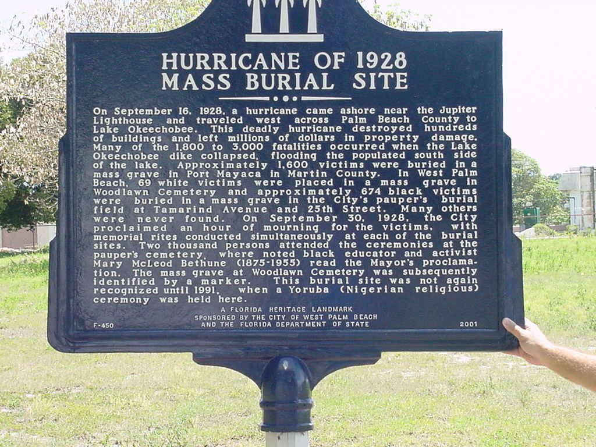

The Okeechobee Hurricane Strikes Florida
The 1928 storm that overwhelmed the lake's southern shore and became Florida's deadliest hurricane disaster
By Wm. E. McMullen II
September 16, 1928 — At approximately 6:15 p.m., a powerful hurricane made landfall in Palm Beach County between Jupiter and Boca Raton. It devastated coastal communities, crossed into the interior and drove the waters of Lake Okeechobee over the low earthen embankments surrounding its southern shore.
The resulting flood swept through Belle Glade, Pahokee, South Bay, Chosen, Bean City and nearby agricultural settlements. Homes were broken apart or carried away. Thousands of people were trapped in darkness as wind-driven lake water spread across the low-lying mucklands.

A Major Hurricane Reaches Palm Beach County
The storm had already devastated Guadeloupe and struck Puerto Rico as an exceptionally intense hurricane before crossing the Bahamas. Warnings gave residents along Florida's Atlantic coast time to prepare, but the danger around Lake Okeechobee was far more difficult to escape.
The National Weather Service places the Florida landfall at approximately 6:15 p.m. on September 16. The hurricane crossed the coast as a powerful Category 4 storm. Coastal Palm Beach County suffered destructive winds and storm surge, but the greatest loss of life occurred inland.

The Lake Becomes the Disaster
Heavy rains before the hurricane had already raised Lake Okeechobee and filled surrounding canals and drainage ditches. The lake was bordered in places by low embankments built largely from muck. They were not a continuous modern flood-control system capable of containing the water driven by a major hurricane.
As the storm crossed the lake, its winds pushed water toward the populated southern shore. The surge overtopped and broke through the embankments. Water rushed across hundreds of square miles, reaching depths high enough to tear houses from their foundations and carry people, livestock, lumber and farm equipment into the Everglades.

Communities Swept Away
The flood struck at night, when wind, rain and darkness made escape nearly impossible. Survivors climbed onto roofs, trees, railroad embankments and floating debris. Some buildings moved intact until they collided with trees or other structures; others disintegrated in the current.
Many victims were Black migrant agricultural workers and their families who lived in the most vulnerable low-lying areas. Others were immigrants from the Bahamas and the Caribbean whose names were poorly recorded. Entire settlements disappeared, and many bodies were never recovered from the sawgrass and floodwaters.
A Death Toll That Could Never Be Precisely Counted
Early counts varied widely. The Red Cross reported 1,810 deaths, and the National Weather Service long used a figure near 1,836. Later historical reassessment raised the United States death toll to at least 2,500.
The uncertainty itself tells part of the story. Migrant laborers were not always included in local records, many people were known only by nicknames, and the flood carried victims far from their homes. The hurricane remains Florida's deadliest natural disaster and one of the deadliest hurricanes in United States history.
Inequality Continued After Death
The disaster's racial inequality did not end when the water receded. White victims recovered near West Palm Beach were buried in Woodlawn Cemetery. Hundreds of Black victims were placed in a mass grave at the city's paupers' burial field near Tamarind Avenue and 25th Street. Approximately 1,600 additional victims were buried at Port Mayaca.
The West Palm Beach mass burial ground went without a permanent marker for decades. Community advocates eventually secured recognition of the site, which received a Florida historical marker and was listed in the National Register of Historic Places.

The Hurricane Reshapes Florida Water Management
The catastrophe forced Florida and the federal government to reconsider how Lake Okeechobee should be managed. Congress authorized greater federal involvement, and the U.S. Army Corps of Engineers constructed a much larger system of levees, channels and control works around the lake.
That system became known as the Herbert Hoover Dike. It greatly reduced the risk of the kind of uncontrolled lake surge that occurred in 1928, while also becoming part of the larger and continuing story of Everglades drainage, agriculture, water supply, environmental restoration and flood protection.
Why September 16 Matters
The Okeechobee Hurricane was more than a weather event. It exposed the deadly combination of a powerful storm, vulnerable flood-control works, settlement on low ground, limited transportation and deep racial and economic inequality.
Remembering the storm means remembering the communities south of the lake and the thousands of people whose deaths were too often reduced to an uncertain number. Their loss changed Florida engineering, federal water policy and the physical landscape of South Florida.
Sources for Additional Reading
- National Weather Service, Miami–South Florida — The 1928 Okeechobee Hurricane — Detailed storm history, maps, photographs, casualty estimates and memorial information.
- NOAA Atlantic Oceanographic and Meteorological Laboratory — Lake Okeechobee Hurricane of 1928 — Federal overview of the storm and its extraordinary human toll.
- National Park Service — Hurricane of 1928 African American Mass Burial Site — History and national significance of the West Palm Beach burial ground.
Previous Entry: September 15 — The Kingfisher Saltworks Raid
Explore the daily archive: Discover more events that shaped Florida's communities, culture and history.
Today in Florida History